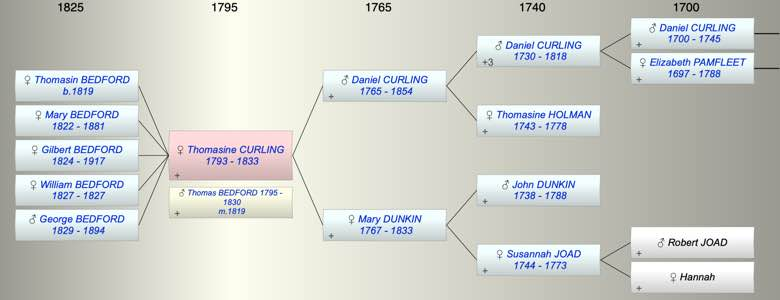

| [Index] |
| Thomasine CURLING (1793 - 1833) |
|  |
| b. 1793 at St Laurence |
| m. 02 Feb 1819 Thomas BEDFORD (1795 - 1830) at St Laurence |
| d. 1833 aged 40 |
| Parents: |
| Daniel CURLING (1765 - 1854) |
| Mary Matson DUNKIN (1767 - 1833) |
| Children (5): |
| Thomasin BEDFORD (1819 - ) |
| Mary BEDFORD (1822 - 1881) |
| Gilbert BEDFORD (1824 - 1917) |
| William BEDFORD (1827 - 1827) |
| George BEDFORD (1829 - 1894) |
| Events in Thomasine CURLING (1793 - 1833)'s life | |||||
| Date | Age | Event | Place | Notes | Src |
| 1793 | Thomasine CURLING was born | St Laurence | Note 1 | ||
| 02 Feb 1819 | 26 | Married Thomas BEDFORD (aged 24) | St Laurence | Note 2 | |
| 24 Nov 1819 | 26 | Birth of daughter Thomasin BEDFORD | Southwark | Note 3 | |
| 1822 | 29 | Birth of daughter Mary BEDFORD | St Laurence | Note 4 | |
| 1824 | 31 | Birth of daughter Gilbert BEDFORD | St Laurence | Note 5 | |
| 1827 | 34 | Birth of daughter William BEDFORD | St Laurence | Note 6 | |
| 1827 | 34 | Death of daughter William BEDFORD | |||
| 1829 | 36 | Birth of son George BEDFORD | St Laurence | Note 7 | |
| 1830 | 37 | Death of husband Thomas BEDFORD (aged 35) | |||
| 1833 | 40 | Thomasine CURLING died | |||
| 1833 | 40 | Death of mother Mary Matson DUNKIN (aged 66) | |||
| Created on a Mac™ using iFamily for Mac™ on 8 Oct 2023 |